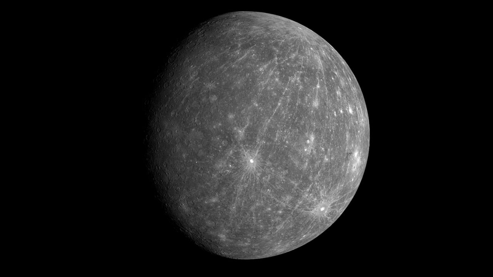
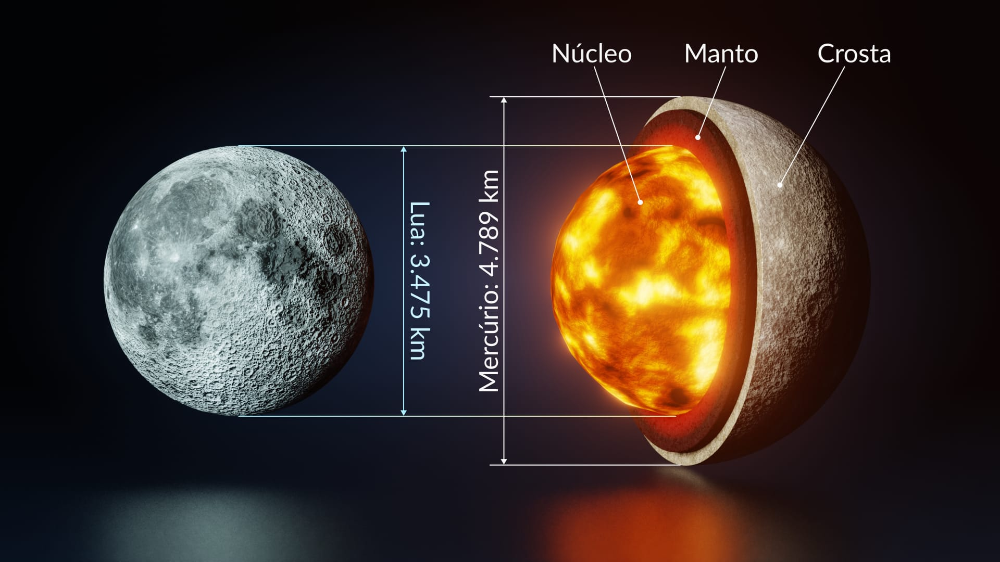

Mercúrio é o menor e o primeiro planeta do Sistema Solar.

Ele tem um tamanho semelhante ao da Lua, sendo apenas um pouco maior que ela.

Mercúrio é o menor e mais próximo planeta do Sol, com uma órbita de cerca de 88 dias terrestres e a maior excentricidade entre os planetas do Sistema Solar. Seu movimento orbital é tão peculiar que a Teoria da Relatividade Geral foi necessária para explicar sua precessão orbital. Embora seja difícil de observar da Terra, Mercúrio é, em média, o planeta mais próximo da Terra, segundo um estudo de 2019. Tem aparência parecida com a Lua, com crateras e planícies, sem atmosfera substancial nem satélites naturais, mas possui um núcleo rico em ferro que gera um campo magnético fraco. Suas temperaturas variam de −183 °C a 427 °C. As primeiras observações datam de antes do século IV a.C., quando era confundido com dois corpos celestes diferentes. Recebeu o nome do deus romano Mercúrio, equivalente ao Hermes grego.